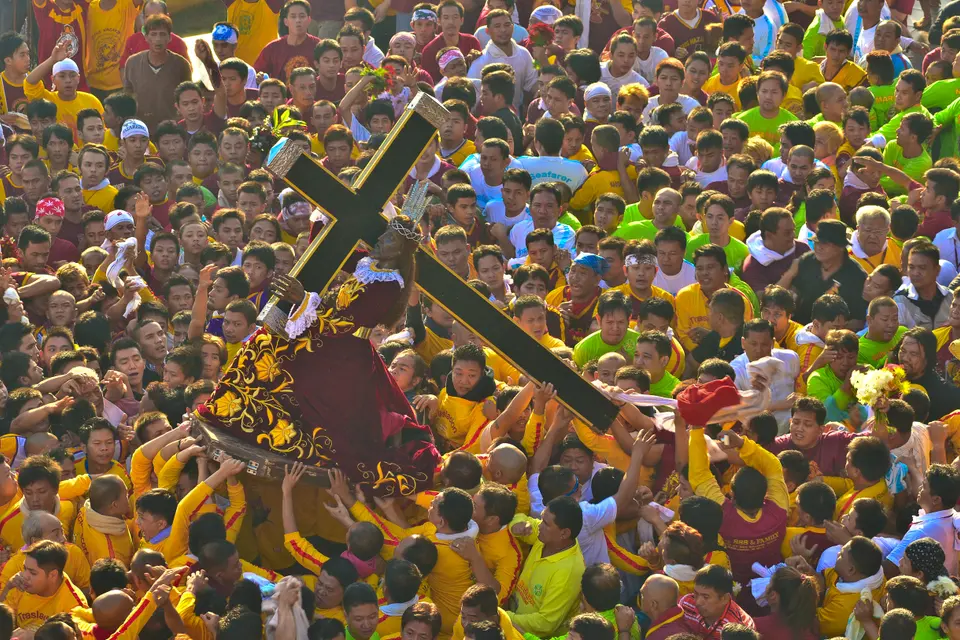
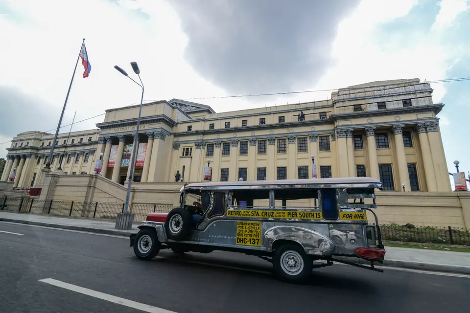
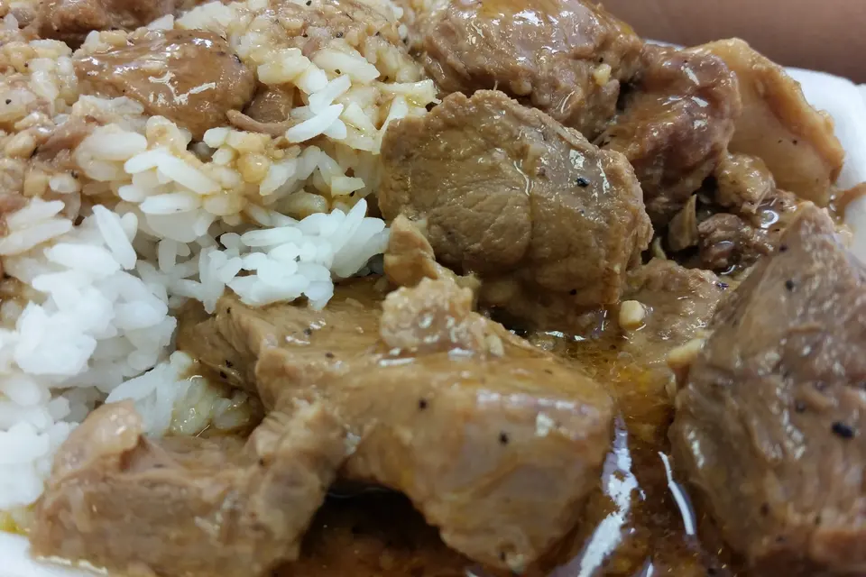
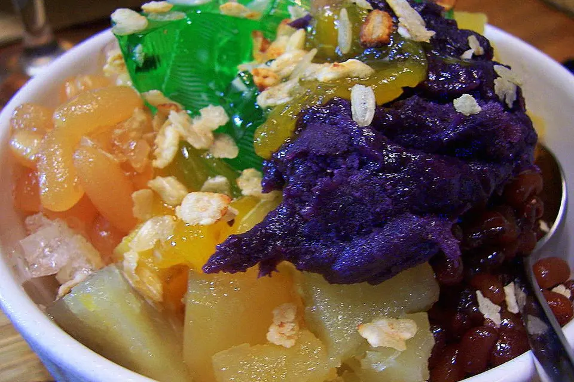

Culture & Food
Manila's identity comes alive in its street processions, hand-painted jeepneys, warm hospitality, and dishes shaped by Malay, Chinese, and Spanish influences.
Festivals & Traditions
Every 9 January, millions of devotees gather in Quiapo for the Feast of the Black Nazarene (Traslación), one of the largest religious processions in the world, celebrating a centuries-old dark wooden statue of Christ.
Manila also embraces the world's longest Christmas season, beginning as early as September and culminating in Simbang Gabi—nine dawn Masses leading to Christmas Eve—followed by lanterns (parol) glowing in every neighbourhood. On 12 June, Rizal Park hosts civic parades and flag ceremonies for Philippine Independence Day.

Jeepney — King of the Road
No symbol captures everyday Manila quite like the colourful jeepney. After World War II, Filipino mechanics lengthened surplus U.S. military Willys jeeps, added metal roofs and bench seating, and turned them into affordable public transit.
Painted in bright folk art, chrome hood ornaments, and family names, jeepneys remain a beloved emblem of Filipino resourcefulness and community spirit—where passengers pass coins forward hand-to-hand with a cheerful "Bayad po!" ("Here is my fare!").

Filipino Proverb
Ang hindi lumingon sa pinanggalingan ay hindi makararating sa paroroonan.
“One who does not look back at where they came from will never reach their destination.”
Must-Try Foods in Manila
From slow-braised classics in neighbourhood carinderias to centuries-old recipes in Binondo, Manila rewards curious appetites.


-
Adobo
The unofficial national dish: chicken or pork braised in vinegar, soy sauce, garlic, bay leaves, and whole peppercorns until tender and savoury.
-
Sinigang
A comforting, sour soup soured with tamarind (sampalok) and simmered with pork, shrimp, or milkfish alongside water spinach and radish.
-
Lechon
Whole slow-roasted pig with crisp golden skin, served at fiestas and family celebrations with rich liver sauce or spiced vinegar.
-
Halo-Halo
Shaved ice layered with sweetened fruits, beans, leche flan, evaporated milk, and purple yam (ube) ice cream.
-
Binondo Street Food
Steamed pork siopao, flaky hopia pastries, and fresh lumpiang sariwa spring rolls along Ongpin Street.
Plan Your Visit
Fields marked with * are required. (Educational demo form — no data is sent.)